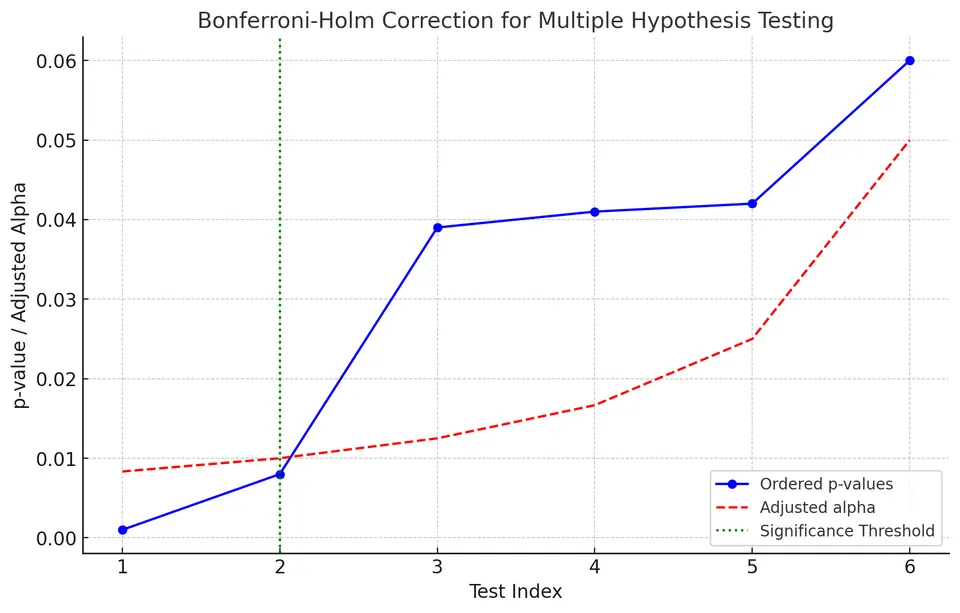

When conducting multiple hypothesis tests, the probability of making at least one Type I error—falsely rejecting a true null hypothesis—increases. This is known as the multiple comparisons problem or, in some contexts, the look-elsewhere effect.
Methods for addressing this problem typically adjust significance thresholds or p-values. Different methods control different types of error and involve different trade-offs between false positives and statistical power.
$$ \frac{41}{80+41}\approx0.34 $$
so about 34% of the reported discoveries are false positives.
The family-wise error rate (FWER) is the probability of making at least one Type I error among a defined family of hypothesis tests. Controlling FWER limits the probability of any false rejection within that family.
The Bonferroni correction is a common method for controlling the FWER. If the desired family-wise significance level is $\alpha$ and $m$ tests are performed, each individual test uses:
$$ \alpha_{\text{adjusted}} = \frac{\alpha}{m} $$
The Bonferroni correction is conservative, particularly when many tests are performed. This reduces the probability of false positives but can increase the probability of Type II errors, where a false null hypothesis is not rejected.
Suppose we conduct 20 hypothesis tests and want to control the family-wise error rate at $\alpha = 0.05$. The Bonferroni-adjusted significance level is:
$$ \alpha_{\text{adjusted}} = \frac{\alpha}{m} = \frac{0.05}{20} = 0.0025 $$
where:
Conclusion:
After applying the Bonferroni correction, we reject the null hypothesis for an individual test only if its p-value is less than or equal to $0.0025$.
This controls the family-wise error rate at no more than 0.05, but the stricter threshold also reduces power and can increase the number of false negatives.
Unlike FWER, which controls the probability of making at least one false rejection, the false discovery rate controls the expected proportion of false discoveries among all rejected null hypotheses.
FDR-controlling procedures are generally more powerful than FWER-controlling methods, making them useful in exploratory settings where many hypotheses are tested and some false discoveries can be tolerated.
The Benjamini-Hochberg (BH) procedure controls the FDR by ordering the p-values from smallest to largest:
$$ p_{(1)} \leq p_{(2)} \leq \cdots \leq p_{(m)} $$
Each ordered p-value is compared with:
$$ \frac{i}{m}\alpha $$
where:
We find the largest rank $k$ such that:
$$ p_{(k)} \leq \frac{k}{m}\alpha $$
and reject the null hypotheses corresponding to:
$$ p_{(1)},\ldots,p_{(k)}. $$
Suppose we conduct six hypothesis tests and obtain the p-values:
$$ \{0.001, 0.008, 0.039, 0.041, 0.042, 0.06\} $$
The following example uses the Holm-Bonferroni procedure, which controls the family-wise error rate rather than the false discovery rate.
We apply the procedure at $\alpha = 0.05$ by comparing each ordered p-value with a sequentially adjusted significance level.
Step-by-Step Procedure:
I. Order the p-values in ascending order:
$$ 0.001, 0.008, 0.039, 0.041, 0.042, 0.06 $$
II. Adjust the significance level for each test:
$$ \alpha_i = \frac{\alpha}{m-i+1} $$
where $m=6$ and $\alpha=0.05$.
III. Compare each p-value with its adjusted threshold:
For $p_1 = 0.001$:
$$ 0.001 < \frac{0.05}{6} \approx 0.00833 \quad \text{(Reject $H_0$)} $$
For $p_2 = 0.008$:
$$ 0.008 < \frac{0.05}{5} = 0.01 \quad \text{(Reject $H_0$)} $$
For $p_3 = 0.039$:
$$ 0.039 > \frac{0.05}{4} = 0.0125 \quad \text{(Fail to reject $H_0$)} $$
The Holm-Bonferroni procedure stops at the first hypothesis that is not rejected. Therefore, the remaining hypotheses are also not rejected.

Using the Holm-Bonferroni procedure, we reject the first two null hypotheses and fail to reject the remaining four.
The procedure controls the family-wise error rate while generally being less conservative than the standard Bonferroni correction. As with other multiple-testing procedures, stronger protection against false positives comes at the cost of reduced power and a greater risk of failing to detect real effects.